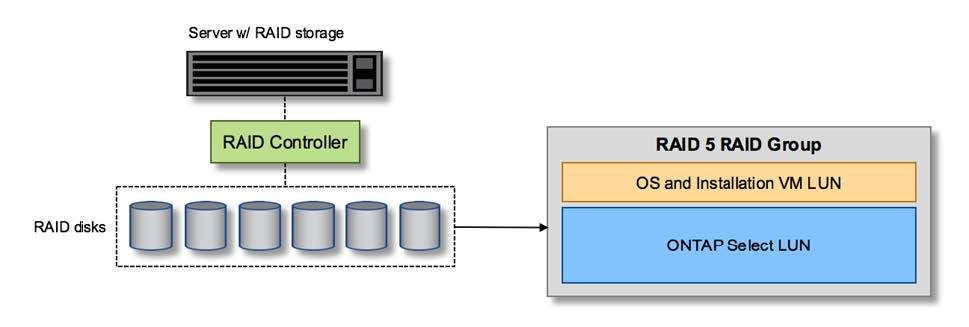
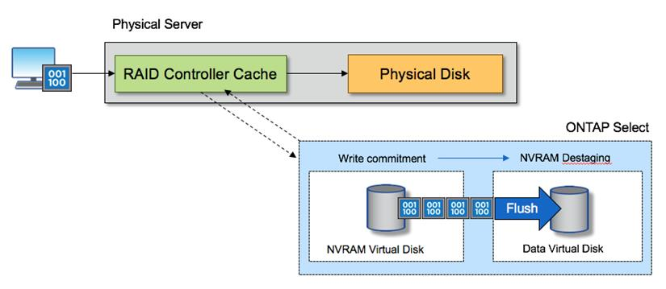

문서 변경 요청
문서 변경 요청 이 페이지 편집
이 페이지 편집 기여하는 방법 자세히 알아보기
기여하는 방법 자세히 알아보기로컬 연결 스토리지를 위한 하드웨어 RAID 서비스입니다
하드웨어 RAID 컨트롤러를 사용할 수 있는 경우, ONTAP Select는 RAID 서비스를 하드웨어 컨트롤러로 이동하여 쓰기 성능 향상 및 물리적 드라이브 장애에 대한 보호를 모두 제공할 수 있습니다. 따라서 ONTAP Select 클러스터 내의 모든 노드에 대한 RAID 보호는 ONTAP 소프트웨어 RAID가 아니라 로컬로 연결된 RAID 컨트롤러에 의해 제공됩니다.

|
물리적 RAID 컨트롤러가 기본 드라이브에 RAID 스트라이핑을 제공하므로 ONTAP Select 데이터 애그리게이트는 RAID 0을 사용하도록 구성됩니다. 다른 RAID 레벨은 지원되지 않습니다. |
로컬 연결 스토리지를 위한 RAID 컨트롤러 구성
ONTAP Select에 백업 스토리지를 제공하는 로컬로 연결된 모든 디스크는 RAID 컨트롤러 뒤에 있어야 합니다. 대부분의 일반 서버는 다양한 수준의 기능을 갖춘 여러 가격대에 여러 개의 RAID 컨트롤러 옵션을 제공합니다. 이 옵션의 목적은 컨트롤러에 있는 특정 최소 요구사항을 충족하는 경우에 가능한 많은 옵션을 지원하는 것입니다.
ONTAP Select 디스크를 관리하는 RAID 컨트롤러는 다음 요구 사항을 충족해야 합니다.
-
하드웨어 RAID 컨트롤러에는 BBU(Battery Backup Unit) 또는 FBWC(플래시 지원 쓰기 캐시)가 있어야 하며 12GBps의 처리량을 지원해야 합니다.
-
RAID 컨트롤러는 하나 이상의 디스크 장애(RAID 5 및 RAID 6)를 견딜 수 있는 모드를 지원해야 합니다.
-
드라이브 캐시를 비활성화 상태로 설정해야 합니다.
-
BBU 또는 플래시 장애 시 쓰기 작업을 수행하도록 폴백과 함께 쓰기 정책을 쓰기 저장 모드로 구성해야 합니다.
-
읽기에 대한 I/O 정책을 캐싱으로 설정해야 합니다.
ONTAP Select에 백업 스토리지를 제공하는 로컬로 연결된 모든 디스크는 RAID 5 또는 RAID 6을 실행하는 RAID 그룹에 배치해야 합니다. SAS 드라이브와 SSD의 경우 최대 24개의 드라이브로 구성된 RAID 그룹을 사용하면 ONTAP에서 수신되는 읽기 요청을 더 많은 디스크에 분산할 수 있습니다. 이렇게 하면 상당한 성능 향상을 얻을 수 있습니다. SAS/SSD 구성에서 단일 LUN과 다중 LUN 구성에 대한 성능 테스트를 수행했습니다. 뚜렷한 차이가 발견되지 않으므로, 단순화를 위해 구성 요구사항을 지원하는 데 필요한 최소한의 LUN을 생성하는 것이 좋습니다.
NL-SAS 및 SATA 드라이브에는 서로 다른 모범 사례가 필요합니다. 성능상의 이유로 최소 디스크 수는 여전히 8개이지만 RAID 그룹 크기는 12개 드라이브를 초과해서는 안 됩니다. 또한 RAID 그룹당 하나의 스페어를 사용하는 것이 좋습니다. 하지만 모든 RAID 그룹에 대한 글로벌 스페어를 사용할 수 있습니다. 예를 들어 3개의 RAID 그룹당 2개의 스페어를 사용할 수 있습니다. 각 RAID 그룹은 8~12개의 드라이브로 구성됩니다.
|
|
이전 ESX 릴리즈의 최대 익스텐트 및 데이터 저장소 크기는 64TB이며, 이러한 대용량 드라이브에서 제공하는 총 물리적 용량을 지원하는 데 필요한 LUN 수에 영향을 줄 수 있습니다. |
RAID 모드
대부분의 RAID 컨트롤러는 최대 3개의 작업 모드를 지원하며, 각 모드는 쓰기 요청이 취하는 데이터 경로의 상당한 차이를 나타냅니다. 이 세 가지 모드는 다음과 같습니다.
-
쓰기쓰기쓰루. 들어오는 모든 I/O 요청은 RAID 컨트롤러 캐시에 기록된 다음 즉시 디스크로 플러시된 후 호스트에 다시 요청을 확인합니다.
-
손목. 들어오는 모든 I/O 요청은 RAID 컨트롤러 캐시를 우회하여 디스크에 직접 기록됩니다.
-
쓰기 저장. 수신되는 모든 I/O 요청은 컨트롤러 캐시에 직접 기록되고 즉시 호스트에 다시 전달됩니다. 데이터 블록은 컨트롤러를 사용하여 비동기식으로 디스크로 플러시됩니다.
쓰기 저장 모드는 블록이 캐시로 들어간 직후 I/O 확인이 발생하면서 가장 짧은 데이터 경로를 제공합니다. 이 모드는 혼합 읽기/쓰기 워크로드에서 지연 시간이 가장 짧고 처리량이 가장 높습니다. 그러나 BBU 또는 비휘발성 플래시 기술이 없는 경우 이 모드로 작동할 때 시스템에 전원 장애가 발생할 경우 데이터가 손실될 위험이 있습니다.
ONTAP Select를 사용하려면 배터리 백업 또는 플래시 장치가 있어야 합니다. 따라서 이러한 유형의 장애가 발생할 경우 캐싱된 블록이 디스크로 플러시됩니다. 따라서 RAID 컨트롤러를 쓰기 저장 모드로 구성해야 합니다.
ONTAP Select와 OS 간에 공유되는 로컬 디스크입니다
가장 일반적인 서버 구성은 모든 로컬로 연결된 스핀들이 단일 RAID 컨트롤러 뒤에 있는 구성입니다. 최소 2개의 LUN을 프로비저닝해야 합니다. 하나는 하이퍼바이저용으로, 다른 하나는 ONTAP Select VM에 대해 프로비저닝해야 합니다.
예를 들어, 6개의 내부 드라이브와 단일 Smart Array P420i RAID 컨트롤러가 있는 HP DL380 G8을 고려해 보십시오. 모든 내부 드라이브는 이 RAID 컨트롤러에 의해 관리되며 다른 스토리지는 시스템에 없습니다.
다음 그림은 이러한 구성 스타일을 보여 줍니다. 이 예에서는 시스템에 다른 스토리지가 없으므로 하이퍼바이저가 ONTAP Select 노드와 스토리지를 공유해야 합니다.
-
RAID로 관리되는 스핀들만 있는 서버 LUN 구성 *

ONTAP Select와 동일한 RAID 그룹에서 OS LUN을 프로비저닝하면 하이퍼바이저 OS(및 해당 스토리지에서 프로비저닝되는 클라이언트 VM)가 RAID 보호의 이점을 누릴 수 있습니다. 이 구성은 단일 드라이브 장애로 인해 전체 시스템이 다운되는 것을 방지합니다.
로컬 디스크는 ONTAP Select와 OS 간에 분할됩니다
서버 공급업체에서 제공하는 다른 가능한 구성에는 여러 RAID 또는 디스크 컨트롤러를 사용하여 시스템을 구성하는 작업이 포함됩니다. 이 구성에서는 디스크 세트를 하나의 디스크 컨트롤러에서 관리하며, RAID 서비스를 제공할 수도 있고 제공하지 않을 수도 있습니다. 두 번째 디스크 세트는 RAID 5/6 서비스를 제공할 수 있는 하드웨어 RAID 컨트롤러에 의해 관리됩니다.
이 유형의 구성을 사용할 경우 RAID 5/6 서비스를 제공할 수 있는 RAID 컨트롤러 뒤에 있는 스핀들 세트는 ONTAP Select VM에서만 사용해야 합니다. 관리 중인 총 스토리지 용량에 따라 디스크 스핀들을 하나 이상의 RAID 그룹 및 하나 이상의 LUN으로 구성해야 합니다. 그런 다음 이러한 LUN을 사용하여 하나 이상의 데이터 저장소를 생성하고 모든 데이터 저장소를 RAID 컨트롤러에 의해 보호합니다.
다음 그림과 같이 첫 번째 디스크 세트는 하이퍼바이저 OS 및 ONTAP 스토리지를 사용하지 않는 클라이언트 VM용으로 예약되어 있습니다.
혼합 RAID/비 RAID 시스템 * 에서 서버 LUN 구성

여러 개의 LUN
단일 RAID 그룹/단일 LUN 구성을 변경해야 하는 경우는 두 가지가 있습니다. NL-SAS 또는 SATA 드라이브를 사용하는 경우 RAID 그룹 크기는 드라이브 12개를 초과하지 않아야 합니다. 또한 단일 LUN이 기본 하이퍼바이저 스토리지보다 커지면 개별 파일 시스템 익스텐트 최대 크기 또는 총 스토리지 풀 최대 크기가 제한됩니다. 그런 다음 기본 물리적 스토리지를 여러 LUN으로 분할해야 파일 시스템을 성공적으로 생성할 수 있습니다.
VMware vSphere 가상 머신 파일 시스템 제한
일부 버전의 ESX에서 데이터 저장소의 최대 크기는 64TB입니다.
서버에 64TB 이상의 스토리지가 연결되어 있는 경우 각각 64TB보다 작은 여러 LUN을 프로비저닝해야 할 수 있습니다. SATA/NL-SAS 드라이브의 RAID 재구축 시간을 향상시키기 위해 여러 RAID 그룹을 생성하면 여러 LUN을 프로비저닝하게 됩니다.
여러 LUN이 필요할 경우 가장 중요한 고려 사항은 이러한 LUN이 비슷하고 일관된 성능을 발휘하는지 확인하는 것입니다. 모든 LUN을 단일 ONTAP 애그리게이트에서 사용하는 경우 이 점이 특히 중요합니다. 또는 하나 이상의 LUN의 서브셋이 확실히 다른 성능 프로필을 가지고 있는 경우 이러한 LUN을 별도의 ONTAP Aggregate로 분리하는 것이 좋습니다.
여러 파일 시스템 익스텐트를 사용하여 데이터 저장소의 최대 크기까지 단일 데이터 저장소를 생성할 수 있습니다. ONTAP Select 라이센스가 필요한 용량을 제한하려면 클러스터를 설치하는 동안 용량 한도를 지정해야 합니다. 이 기능을 사용하면 ONTAP Select에서 데이터 저장소의 일부 공간만 사용할 수 있습니다(따라서 라이센스가 필요함).
또는 단일 LUN에 단일 데이터 저장소를 생성하여 시작할 수 있습니다. 더 큰 ONTAP Select 용량 라이센스가 필요한 추가 공간이 필요한 경우 해당 공간을 데이터 저장소의 최대 크기까지 익스텐트의 동일한 데이터 저장소에 추가할 수 있습니다. 최대 크기에 도달하면 새 데이터 저장소를 생성하여 ONTAP Select에 추가할 수 있습니다. 두 가지 유형의 용량 확장 작업이 모두 지원되며 ONTAP Deploy Storage-add 기능을 사용하면 됩니다. 각 ONTAP Select 노드는 최대 400TB의 스토리지를 지원하도록 구성할 수 있습니다. 여러 데이터 저장소에서 용량을 프로비저닝하려면 2단계 프로세스가 필요합니다.
초기 클러스터 생성을 사용하여 ONTAP Select 클러스터를 생성할 수 있습니다. 이 클러스터에는 초기 데이터 저장소의 일부 또는 전체 공간이 사용됩니다. 두 번째 단계는 원하는 총 용량에 도달할 때까지 추가 데이터 저장소를 사용하여 하나 이상의 용량 추가 작업을 수행하는 것입니다. 이 기능에 대한 자세한 내용은 섹션을 참조하십시오 "스토리지 용량 증가".
|
|
VMFS 오버헤드가 0이 아닙니다(참조) "VMware KB 1001618")를 사용하여 데이터 저장소에서 사용 가능한 것으로 보고된 전체 공간을 사용하려고 하면 클러스터 생성 작업 중에 오류가 발생했습니다. |
각 데이터 저장소에서 2% 버퍼가 사용되지 않은 상태로 남아 있습니다. 이 공간은 ONTAP Select에서 사용되지 않으므로 용량 라이센스가 필요하지 않습니다. ONTAP Deploy는 용량 한도가 지정되지 않은 경우 버퍼에 대한 정확한 기가바이트 수를 자동으로 계산합니다. 용량 한도를 지정한 경우 해당 크기가 먼저 적용됩니다. 용량 캡 크기가 버퍼 크기 내에 있으면 용량 캡으로 사용할 수 있는 올바른 최대 크기 매개 변수를 지정하는 오류 메시지와 함께 클러스터 생성에 실패합니다.
“InvalidPoolCapacitySize: Invalid capacity specified for storage pool “ontap-select-storage-pool”, Specified value: 34334204 GB. Available (after leaving 2% overhead space): 30948”
VMFS 6은 신규 설치 및 기존 ONTAP 구축 또는 ONTAP Select VM의 Storage vMotion 작업의 타겟으로 지원됩니다.
VMware는 VMFS 5에서 VMFS 6으로의 데이터 이동 없는 업그레이드를 지원하지 않습니다. 따라서 Storage vMotion은 모든 VM이 VMFS 5 데이터 저장소에서 VMFS 6 데이터 저장소로 전환할 수 있도록 하는 유일한 메커니즘입니다. 그러나 ONTAP Select 및 ONTAP 구축을 통한 Storage vMotion 지원이 VMFS 5에서 VMFS 6으로 전환하는 특정 목적 외에 다른 시나리오에 대해서도 지원하도록 확장되었습니다.
ONTAP Select 가상 디스크
ONTAP Select의 핵심에는 하나 이상의 스토리지 풀에서 프로비저닝된 가상 디스크 집합이 ONTAP에 제공됩니다. ONTAP에는 물리적 디스크로 처리하는 가상 디스크 세트가 제공되며, 스토리지 스택의 나머지 부분은 하이퍼바이저에 의해 추상화됩니다. 다음 그림에서는 물리적 RAID 컨트롤러, 하이퍼바이저 및 ONTAP Select VM 간의 관계를 자세하게 보여 줍니다.
-
RAID 그룹 및 LUN 구성은 서버의 RAID 컨트롤러 소프트웨어 내에서 이루어집니다. VSAN 또는 외부 스토리지를 사용할 때는 이 구성이 필요하지 않습니다.
-
스토리지 풀 구성은 하이퍼바이저 내에서 수행됩니다.
-
가상 디스크는 개별 VM에 의해 생성되고 소유됩니다. 이 예에서는 ONTAP Select에 의해 생성됩니다.
-
가상 디스크와 물리 디스크 매핑 *

가상 디스크 프로비저닝
보다 간소화된 사용자 환경을 제공하기 위해 ONTAP Select 관리 툴인 ONTAP Deploy가 관련 스토리지 풀에서 가상 디스크를 자동으로 프로비저닝하고 ONTAP Select VM에 연결합니다. 이 작업은 초기 설정 및 스토리지 추가 작업 중에 자동으로 수행됩니다. ONTAP Select 노드가 HA 쌍의 일부인 경우 가상 디스크는 로컬 및 미러 스토리지 풀에 자동으로 할당됩니다.
ONTAP Select는 연결된 기본 스토리지를 각각 16TB를 초과하지 않는 동일한 크기의 가상 디스크로 나눕니다. ONTAP Select 노드가 HA 쌍의 일부인 경우 각 클러스터 노드에서 2개 이상의 가상 디스크를 생성하고 미러링된 Aggregate 내에서 사용할 로컬 및 미러 플렉스에 할당됩니다.
예를 들어, ONTAP Select에서는 31TB인 데이터 저장소 또는 LUN을 할당할 수 있습니다(VM이 구축된 후 남은 공간과 시스템 및 루트 디스크가 프로비저닝됨). 그런 다음 4개의 ~7.75TB 가상 디스크가 생성되어 해당 ONTAP 로컬 및 미러 플렉스에 할당됩니다.
|
|
ONTAP Select VM에 용량을 추가하면 다양한 크기의 VMDK가 될 수 있습니다. 자세한 내용은 섹션을 참조하십시오 "스토리지 용량 증가". FAS 시스템과 달리 크기가 다른 VMDK가 동일한 애그리게이트에 존재할 수 있습니다. ONTAP Select는 이러한 VMDK에서 RAID 0 스트라이프를 사용하므로 크기에 관계없이 각 VMDK의 모든 공간을 완전히 사용할 수 있습니다. |
NVRAM을 가상화했습니다
NetApp FAS 시스템은 일반적으로 비휘발성 플래시 메모리가 포함된 고성능 카드인 물리적 NVRAM PCI 카드를 장착합니다. 이 카드는 들어오는 쓰기를 클라이언트에 즉시 확인할 수 있는 기능을 ONTAP에 부여하여 쓰기 성능을 크게 향상시킵니다. 또한 디스테이징이라고 하는 프로세스에서 수정된 데이터 블록을 느린 스토리지 미디어로 다시 이동하도록 예약할 수도 있습니다.
일반 시스템에는 일반적으로 이러한 유형의 장비가 장착되지 않습니다. 따라서 이 NVRAM 카드의 기능은 가상화되어 ONTAP Select 시스템 부팅 디스크의 파티션에 배치됩니다. 따라서 인스턴스의 시스템 가상 디스크를 배치하는 것이 매우 중요합니다. 이 때문에 로컬 연결 스토리지 구성을 위해 복원력이 뛰어난 캐시를 갖춘 물리적 RAID 컨트롤러가 필요합니다.
NVRAM은 자체 VMDK에 배치됩니다. NVRAM을 자체 VMDK로 분할하면 ONTAP Select VM이 vNVMe 드라이버를 사용하여 NVRAM VMDK와 통신할 수 있습니다. 또한 ONTAP Select VM은 ESX 6.5 이상과 호환되는 하드웨어 버전 13을 사용해야 합니다.
데이터 경로 설명: NVRAM 및 RAID 컨트롤러
시스템에 유입될 때 쓰기 요청이 취하는 데이터 경로를 따라 가면 가상화된 NVRAM 시스템 파티션과 RAID 컨트롤러 간의 상호 작용이 가장 잘 강조 표시될 수 있습니다.
ONTAP Select VM에 대한 들어오는 쓰기 요청은 VM의 NVRAM 파티션을 대상으로 합니다. 가상화 계층에서 이 파티션은 ONTAP Select 시스템 디스크 내에 있으며, VMDK는 ONTAP Select VM에 연결됩니다. 물리적 계층에서는 이러한 요청이 로컬 RAID 컨트롤러에 캐싱됩니다. 기본 스핀들을 타겟으로 하는 모든 블록 변경도 이와 유사합니다. 여기에서 쓰기가 호스트에 다시 인식됩니다.
이 시점에서 블록이 실제로 RAID 컨트롤러 캐시에 상주하며 디스크로 플러시될 때까지 기다립니다. 논리적으로, 블록은 적절한 사용자 데이터 디스크로 디스테이징될 때까지 NVRAM에 상주합니다.
변경된 블록은 RAID 컨트롤러의 로컬 캐시에 자동으로 저장되기 때문에 NVRAM 파티션에 들어오는 쓰기가 자동으로 캐시되어 주기적으로 물리적 스토리지 미디어로 플러시됩니다. NVRAM 컨텐츠를 ONTAP 데이터 디스크로 다시 주기적으로 플러싱하는 것은 혼동하지 마십시오. 이 두 이벤트는 관련이 없으며 서로 다른 시간과 빈도로 발생합니다.
다음 그림에서는 들어오는 쓰기가 수행하는 입출력 경로를 보여 줍니다. 또한 물리적 계층(RAID 컨트롤러 캐시 및 디스크로 표시)과 가상 계층(VM의 NVRAM 및 데이터 가상 디스크로 표시) 간의 차이점을 강조합니다.
|
|
NVRAM VMDK에서 변경된 블록이 로컬 RAID 컨트롤러 캐시에 캐싱되더라도 캐시는 VM 구성이나 해당 가상 디스크를 인식하지 못합니다. NVRAM은 시스템에 변경된 블록을 모두 저장하며 이 중 NVRAM은 일부에 불과합니다. 여기에는 동일한 백업 스핀들에서 프로비저닝되는 경우 하이퍼바이저에 대해 바인딩된 쓰기 요청이 포함됩니다. |
-
ONTAP Select VM에 대한 들어오는 쓰기 *

|
|
NVRAM 파티션은 자체 VMDK에서 분리됩니다. 이 VMDK는 ESX 버전 6.5 이상에서 사용할 수 있는 vdme 드라이버를 사용하여 연결됩니다. 이 변경 사항은 RAID 컨트롤러 캐시의 이점을 얻지 않는 소프트웨어 RAID를 사용하는 ONTAP Select 설치에 가장 중요합니다. |